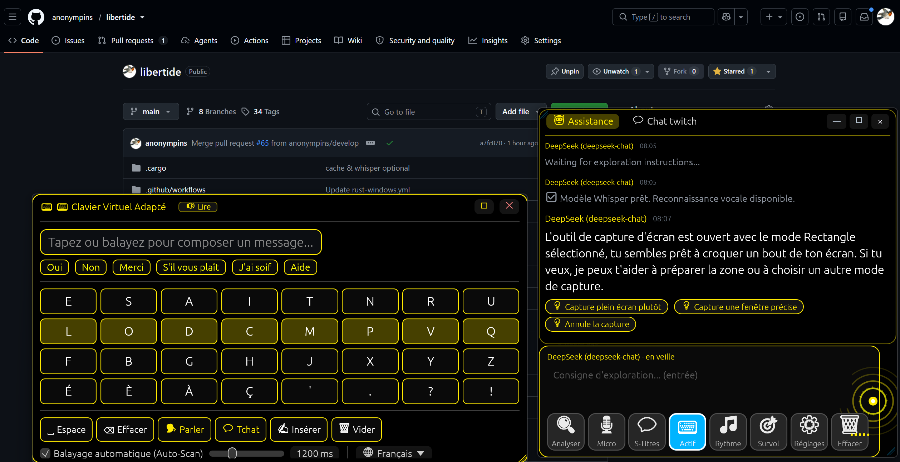
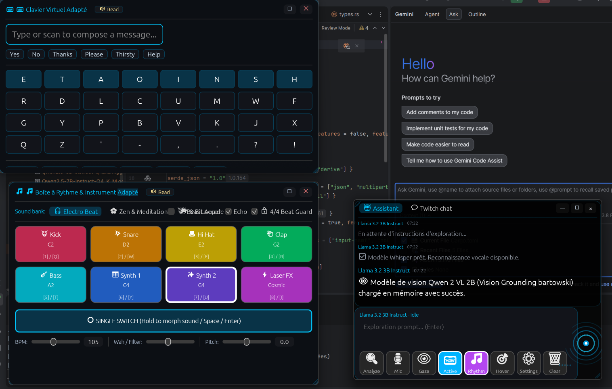

Aperçu de Libertide en action
Découvrez l'interface accessible et ses différents modules en situation réelle.




Dictée Vocale 100% Locale (Whisper)
Dictez vos textes, courriels et documents sans latence. Aucune donnée vocale ou médicale ne transite par le cloud.
LLM Locaux & IA Multimodale
Analyse d'écran visuelle, résumé et assistance contextuelle propulsés par des modèles multimodaux (VLM) s'exécutant 100% en local, sans cloud.
Clavier Virtuel & Tableau CAA
Saisie assistée avec auto-balayage, prédiction de mots contextuelle et communication alternative par pictogrammes ARASAAC.
Ciblage Anti-Tremblement & Badges
Des badges dorés numérotés se superposent sur chaque contrôle. Dites "clique 3" ou tapez le chiffre pour valider sans effort de précision millimétrique.
Domotique & Chambre Médicale
Ajustez l'inclinaison de votre lit médicalisé, les lumières et les volets par la voix ou le regard via Home Assistant, KNXnet/IP (UDP direct) et BACnet/IP.
Contacteur Unique & Passerelle Mobile
Parcours par balayage hiérarchique (Fenêtre ➔ Zone ➔ Bouton). Transformez n'importe quel smartphone, tablette ou carte ESP32 en contacteur sans fil avec retour haptique.
Eye-Tracking IA & Matériel
Contrôlez le pointeur avec votre simple webcam via notre réseau neuronal local (L2CS-Net ONNX), ou connectez vos eye-trackers dédiés (Tobii, GazePoint GP3) en OpenGaze et OpenTrack.
Votre avis nous intéresse
Aidez-nous à faire évoluer Libertide en partageant vos retours, suggestions d'amélioration ou témoignages.